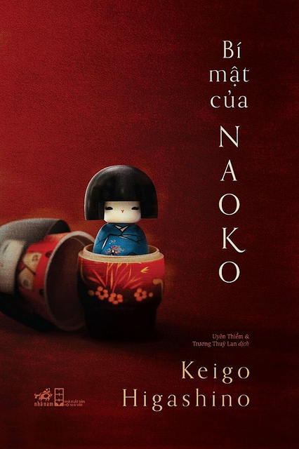

REVIEW SÁCH
Bí mật của Naoko
Nhận xét của mình
Đầu tiên thì là về cốt truyện, câu chuyện về một gia đình 3 người, 2 vợ chồng và 1 cô con gái. Truyện kể rằng vào một chuyến xe về quê của 2 mẹ con, đã không may gặp tai nạn, nhiều người đã không qua khỏi và bị thương nặng. Và 2 mẹ con cũng không phải ngoại lệ, người mẹ Naoko đã ra đi trong bệnh viện, để lại người chồng và đứa con gái vẫn còn hôn mê trên giường bệnh. Nhưng rồi một chuyện kì lạ xảy ra, linh hồn người mẹ đã nhập vào xác cô hé Monami (người con). Và sau đó là cuộc sống khó khăn của gia đình cũng như anh chồng Heisuke khi phải học cách thích nghi và chấp nhận linh hồn người vợ trong thể xác con gái. Ban đầu mình đọc, mẹ mình nói là quyển này ban đầu không hay những về sau rất sốc, thì mình cũng không biết là nếu bắt đầu truyện bằng tình tiết này thì có thể sốc theo kiểu nào vậy. Nhưng sự kì vọng của mình đã hoá thất vọng, mình thấy truyện khá lan man, và cái việc nhập hồn bị không logic, cũng không phải trinh thám. Nhiều lúc đọc mình sẽ kiểu hỏi chấm và nhiều lúc sẽ kiểu hỏi chấm cộng thêm dấu chấm than nữa (có tình tiết loạn luân). Đến cuối cùng thì mình thấy tội anh chồng, và nhiều lúc đọc thấy khá cay cú cô vợ. Đúng là cái kết có thể khá bất ngờ, nhưng nó khiến mình thấy day dứt về phía anh chồng chứ không có cảm giác "hay" về cuốn này.